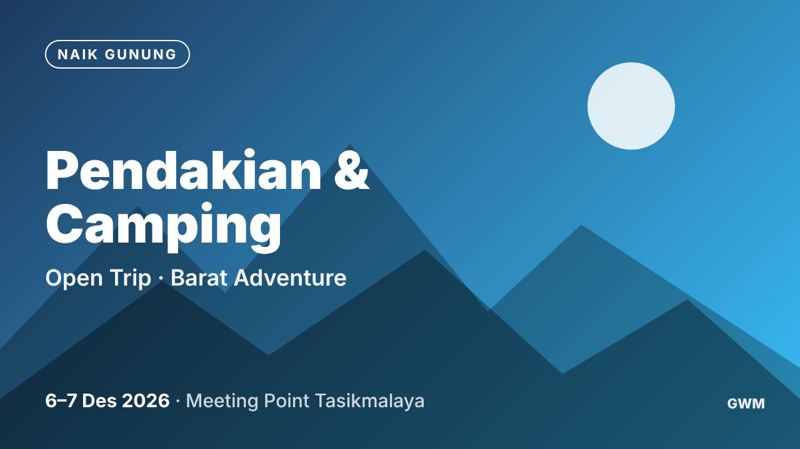

Open Trip Pendakian & Camping - Barat Adventure Tasikmalaya
- Tanggal
- 4 Des 2026 – 1 Jan 2027
- Lokasi
- Meeting point Jakarta, Bandung, Garut, Tasik, Ciamis & Basecamp, Tasikmalaya
- Harga
- Rp450.000 - Rp800.000 / pax
Jadwal open trip Desember 2026 oleh Barat Adventure. Tanggal keberangkatan camp 2H1M: 4-6, 11-13, 18-20, 25-27, 27-29, dan 30 Des-1 Jan. Destinasi, jalur & harga/pax: Gunung Prau via Wates Rp650.000 • Gunung Merbabu via Selo Rp800.000 • Gunung Merbabu via Thekelan Rp800.000 • Gunung Sindoro via Kledung Rp650.000 • Gunung Slamet via Bambangan Rp650.000 • Baduy Luar via Ciboleger Rp450.000 (one day trip). Meeting point: Jakarta, Bandung, Garut, Tasik, Ciamis, Basecamp; meeting point lain tanya admin. INCLUDE CAMP: transportasi PP; driver, BBM & tips supir; registrasi 2H1M; tenda; P3K standar; SKS (jika perlu); homestay/basecamp; makan 1x di basecamp; makan 2x di area camp; breakfast summit (roti); buah-buahan (semangka); welcome drink kopi/teh; alat masak & makan; tenda toilet; uang jaminan sampah; porter tenda; porter logistik; guide & sweeper; merchandise; dokumentasi bersama. INCLUDE TEKTOK: transportasi PP; driver, BBM & tips supir; registrasi; makan 1x; P3K standar; guide lokal; snack roti; air mineral; merchandise; tour leader; dokumentasi bersama. EXCLUDE: perlengkapan pribadi; air & cemilan pribadi; obat pribadi; ojek (opsional); semua yang tidak tercantum di include. Trip tektok lainnya & private trip bisa tanya admin. Info & booking: CP 0831 2926 1118 / IG @baratadventure_.
Buka di GoWithDME Beli tiket / info resmi
Cara ke lokasi
Lokasi: Meeting point Jakarta, Bandung, Garut, Tasik, Ciamis & Basecamp, Tasikmalaya.
Pendakian dimulai dari basecamp Prau, Merbabu, Sindoro, Slamet & Baduy Luar. Titik kumpul dan transportasi dari kota keberangkatan diatur penyelenggara open trip; tanyakan jam kumpul, lokasi jemputan, dan apakah transport dari titik kumpul ke basecamp sudah termasuk biaya.
Jika berangkat mandiri, rencanakan tiba di basecamp sehari sebelum atau sangat pagi, karena jalan menuju basecamp di daerah pegunungan lebih lambat dari perkiraan aplikasi peta dan sinyal bisa hilang.
Tips sebelum berangkat
- Cek tingkat kesulitan dan kondisi fisikmu. Tingkat di event ini: menengah.
- Bawa jaket hangat, jas hujan, headlamp dengan baterai cadangan, sepatu/sandal gunung yang nyaman, dan air minum cukup.
- Pastikan biaya sudah mencakup apa saja (simaksi/tiket masuk, transport, konsumsi, guide) sebelum membayar.
- Kabari keluarga atau teman tentang rute dan jadwalmu, dan ikuti arahan pemandu dan aturan pengelola jalur.
- Bawa pulang semua sampahmu.
- Bulan ini umumnya masuk musim hujan di sebagian besar Indonesia; bawa jas hujan atau payung lipat dan cek prakiraan cuaca sehari sebelumnya.
- Event berlangsung beberapa hari: cek apakah tiketmu berlaku sehari atau semua hari, dan siapkan penginapan bila perlu.
- Mau berangkat bareng? Pakai fitur Ajakan di GoWithDME untuk cari teman ke event ini.
Pertanyaan umum
Kapan Open Trip Pendakian & Camping - Barat Adventure Tasikmalaya digelar?
Open Trip Pendakian & Camping - Barat Adventure Tasikmalaya digelar pada Jumat, 4 Des 2026 – 1 Jan 2027.
Di mana Open Trip Pendakian & Camping - Barat Adventure Tasikmalaya digelar?
Lokasinya di Meeting point Jakarta, Bandung, Garut, Tasik, Ciamis & Basecamp, Tasikmalaya. Rute dan transportasi ada di bagian "Cara ke lokasi".
Berapa harga tiket Open Trip Pendakian & Camping - Barat Adventure Tasikmalaya?
Harga tiket: Rp450.000 - Rp800.000 / pax.
Di mana beli tiket Open Trip Pendakian & Camping - Barat Adventure Tasikmalaya?
Lewat tombol tiket/info resmi di halaman ini, yang mengarah ke kanal penjualan atau penyelenggara.
Seberapa sulit trip Open Trip Pendakian & Camping - Barat Adventure Tasikmalaya?
Tingkat kesulitan yang tercantum: menengah. Durasi: Camp 2H1M / Tektok 1 hari.
Apa yang perlu dibawa?
Jaket, jas hujan, headlamp, sepatu gunung, air minum, dan logistik pribadi. Cek daftar resmi dari penyelenggara trip.
Bagaimana cari teman untuk berangkat bareng?
Buka rincian event di GoWithDME dan pakai tombol Ajakan untuk membuat atau bergabung ke ajakan barengan.
Event terkait
- Open Trip Gunung Papandayan - Atlantik Traveller Indonesia 21 Nov 2026 · Tasikmalaya · Di kota yang sama · Kategori sama · Tanggal berdekatan
- Pendakian Bersama Gunung Prau via Patak Banteng 5 Des 2026 · Wonosobo · Kategori sama · Genre sama · Tanggal berdekatan
- Open Trip Gunung Merbabu via Selo — 12-13 Desember 2026 (HARADUTA) 12 Des 2026 · Magelang · Kategori sama · Tanggal berdekatan
- Open Trip Gunung Gede via Putri — 26-27 Desember 2026 (HARADUTA) 26 Des 2026 · Bogor · Kategori sama
- Open Trip Gunung Sumbing via Garung — 26-27 Desember 2026 (HARADUTA) 26 Des 2026 · Wonosobo · Kategori sama
- Open Trip Gunung Merbabu via Selo — 23-24 Januari 2027 (HARADUTA) 23 Jan 2027 · Magelang · Kategori sama
Cek ulang jadwal dan harga di kanal resmi penyelenggara sebelum membeli tiket.